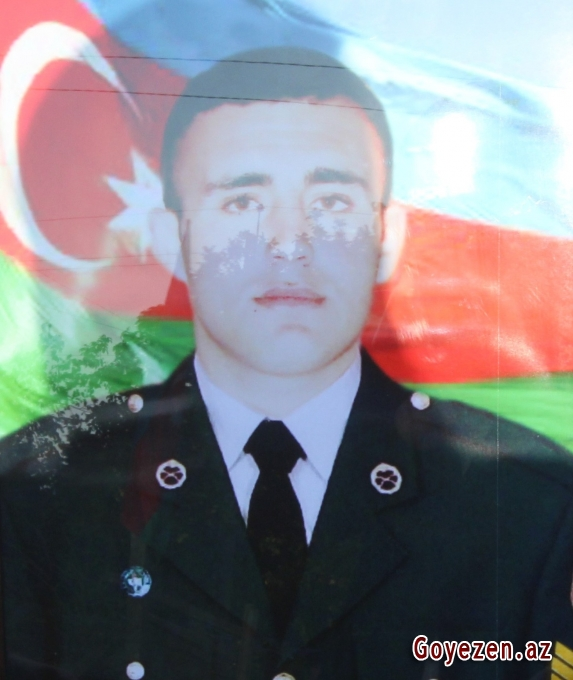

Şəhid Pervin Isgenderov 2 aprel 1987-ci ildə Qazax rayonunun Xanlıqlar kəndində anadan olmuşdur. 1993-cü ildə Şəmistan Şahvələdov adına Xanlıqlar kənd tam orta məktəbin I sinfinə daxil olmuş, 2004-cü ildə həmin məktəbin XI sinfini bitirmişdir.
2005-ci ildə Azərbaycan Respublikası Səfərbərlik və Hərbi Xidmətə Çağırış üzrə Dövlət Xidmətinin Qazax Rayon Şöbəsi tərəfindən Azərbaycan Silahlı Qüvvələrinə həqiqi hərbi xidmətə çağırılmış, 2007-ci ildə isə hərbi xidmətdən tərxis olunmuşdur. 2011-ci ildən Azərbaycan Silahlı Qüvvələrinin "N” saylı hərbi hissəsində müddətdən artıq həqiqi hərbi xidmət hərbi qulluqçusu (MAHHXHQ) kimi xidmət etməyə başlamışdır.
Çavuş rütbəsinə qədər yüksəlmişdir. Sonra 2012-ci ildə Azərbaycan Silahlı Qüvvələrinin Təlim və Tədris Mərkəzində (TTM) gizirlik kursunda oxuyaraq həmin hərbi hissədə gizir kimi xidmət etmişdir. "N” saylı hərbi hissənin 1-ci mexanikləşdirilmiş taborunun 3-cü mexanikləşdirilmiş bölüyünün 2-ci mexanikləşdirilmiş tağımının döyüş maşını komandiri-döyüş maşınları heyətinin rəisi Amid Məmmədov 03.11.2020-ci il tarixdə Füzuli rayonu istiqamətində torpaqlarımızın azadlığı uğrunda gedən döyüşlərdə qəhrəmancasına şəhid olmuşdur.
Şəhid gizirimiz 4 noyabr 2020-ci ildə doğulduğu Qazax rayonunun Xanlıqlar kənd qəbiristanlığında izdihamla dəfn edilmişdir.Ailəliydi.Nisə və Esmira adlı iki azyaşlı qız övladı yadigar qalıb.Azərbaycanın ərazi bütövlüyünün bərpası uğrunda Vətən müharibəsində qəhrəmancasına döyüşərək şəhid olan gizirimizin göstərdiyi igidlik Ali Baş Komandan İlham Əliyev tərəfindən də yüksək qiymətləndirildi. Şəhid gizirimiz ölümündən sonra cənab Prezidentin 15 dekabr 2020-ci il tarixli Sərəncamına əsasən "Vətən uğrunda”, 29 dekabr 2020-ci il tarixli Sərəncamına əsasən "Şuşanın azad olunmasına görə” medalları ilə təltif olunmuşdur.